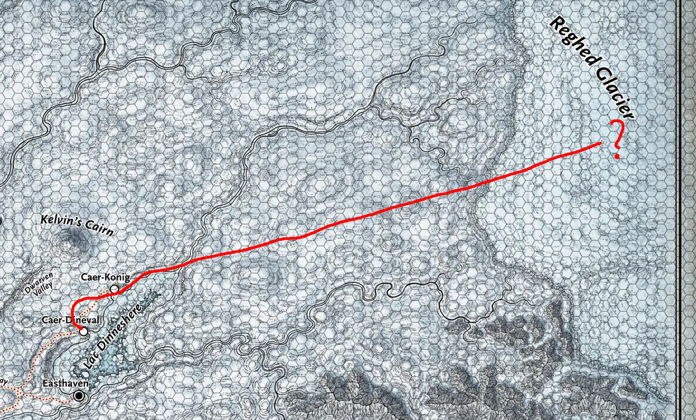
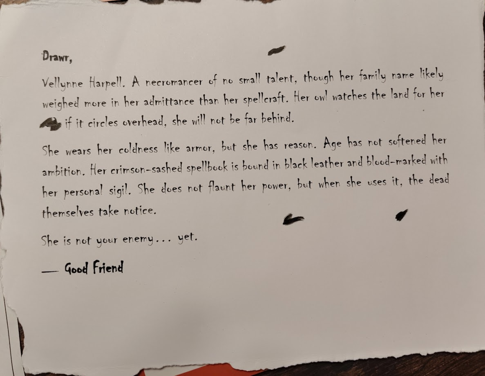

Session 9

Dag 24 (nogsteeds)¶
we gaan het luik van the Ruined Watchtower. voordat we erin gaan doet Drawr Poof (Lars) clearvoyance om te checken of het veilig is. Drawr Poof (Lars) en Elena Footshadow (Lies) passen er niet doorheen, Althea Sardothien (Sara) en Skog Traustur (Jesse) wel mits ze kruipen. ladder naar beneden en tunnel richting het noorden (richting de Spire of Netheril?)
Althea Sardothien (Sara) gaat voorop de tunnel in. Skog Traustur (Jesse) ziet dat de tunnel vrij ver door gaat. ineens horen ze gezoef en gerommel. ze besluiten om te keren, en dan grijpt een harige hand sara dr voet en trekt dr naar achter. ROLL INITIATIVE!!! Skog Traustur (Jesse) prikt zichzelf (heel hard) zodat zn zwaard gaat gloeien zodat ie iets kan zien. het is een Spider. ondertussen zit Althea Sardothien (Sara) helemaal in de spinnenwebben. gelukkig lukt het dr om de spin te doden, ze komen nu samen terug.
we willen naar Spire of Netheril, maar besluiten eerst even te levelen/quests te doen.
eerst kijken bij Dinev's Rest, want de vorige keer voelden we ons bekeken. er is magic, specifieker zelfs er zijn 6 magic. Jesse zegt 'SHOW YOURSEEEEELF' en ineens zijn er 6 Duergar (gnomes?) waarvan 1 gigantisch met een hamer. hij timmert even op de vloer. LETS SEDUCE A DRAGON!!!!
tijdens het gevecht worden de 'dwarfs' groot, en verandert lars in een plantje.
na het gevecht checken we de taverne, verder niets interessants. naar The Caer om daar te rusten
Dag 25¶
LONG REST!!! (terwijl jesse slaapt en larsplant in zn hand heeft, verandert lars weer terug. om het goed te maken voor jesse doet lars prestidigation om te zorgen dat jesse alsnog een kleine doorzichtige compagnion met zich mee heeft zweven)
Dag 26¶
we worden wakker, lars krijgt ineens een brief van de koerier, van goodfriend

Letter from Goodfriend (3) Beste DrawrVellynne Harpell. Een talentvolle magier. Haar uil houdt haar omgeving in de gaten, als ie langs vliegt is Harpell niet ver weg.
Haar spellbook van zwart leer is bestempeld met haar persoonlijke teken. Ze is niet uitbundig met haar magie gebruik, maar als ze het wel gebruikt, is de dood op de hoogte.
Ze is nog niet je vijand.
hieruit nemen we op dat Vellynne Harpell geen vijand is, en we de volgende keer dat we dr tegen komen gaan we proberen met dr in gesprek te gaan
nu terug naar de tunnel, dat lijkt ons nu het meest interessant. nu nemen we Zanar mee. we lopen voorbij de dode spin. aan het einde van de gang zien we een ijzige vlakte. hier zijn dezelfde voetsporen als die bij de Ruined Watchtower te vinden waren. er zijn twee voetsporen die we zouden kunnen volgen. Althea Sardothien (Sara) gaat de rest halen
ondertussen kijken lars en lies naar The Caer, het valt lars ineens op dat daar een standbeeld staat: Avarice (de albino thiefling) met daaronder 2 Gargoiles (levende standbeelden). sara komt aan, en lars waarschuwt meteen dat we als een malle weg moeten, terug naar Skog Traustur (Jesse)
we bespreken de paden en kiezen het pad richting het noordoosten. Elena Footshadow (Lies) leidt de weg. tijdens het lopen veranderen de voetstappen, de voetstappen worden steeds kleiner en veranderen uiteindelijk in een slayyspoor (slee). links zien we Caer-Konig ❄️. rechts zit black dinnershare (meer) we zijn zo lang aan het reizen dat het donker wordt
we zetten kamp op, lies heeft een tactische plek uitgekozen om onszelf te verdedigen. tijdens de nacht ziet sara een rode draak en maakt iedereen ff wakker, er is verder niets aan de hand en maken de nacht rustig af.
we pakken onze spullen en lopen verder, heel ver richting het oosten zien we een bijzondere rotsformatie. volgens sara is dit geen natuurlijke steen, maar een manier van een gebouw maken wat alleen dwergen kunnen. deze vorm is door magie gemaakt. dit is de Spire of Netheril waar we naar opzoek waren.
de slee spoor is van de Karavaan van Torga
SLIPPERY TUNNEEEL gaan we doorheen. we komen uit in een ruimte die ondersteboven zit. het plafond is de vloer zegmaar lol. we gaan door de ondersteboven deur en zien 2 standbeelden, daar is ooit magie overheen geweest, geen idee hoe lang geleden.
de ondersteboven trap gaan we af en door de linker deur, allemaal gereedschap en zwaardmeubels die op het 'plafond' zijn gevallen. er zit een kist op de 'vloer'.
in de kist zitten potions, lars is overtuigd dat het limonade is en drinkt de icetea smaak en krijgt ineens resistance voor is voor 2 uur, lies vodka resistance voor force, sara citroen resistance voor acid, jesse aardbei resistance voor vuur. allemaal voor 2 uur.
in de andere kamer zitten allemaal boekenkasten. The magical wonders of Netheril, misteries of pharinn, wizards in the hollows zijn de boeken. Pharinn zijn telepatische monsters, evil monsters uit de underdark, plaatjes zorgen dat jesse de volgende keer niet effectief kan shortrest doen. laatste boek is een autobiografie over 3 wizards die super saai is.
mythallars is een mechanisch ding en allemaal technische tekeningen, christallen ballen die worden vastgehouden in extrafagante ontworpen wieg, lijkt iets anders dan het device van de weather ding, maar is wel iets anders, veel krachtiger, enorme hoeveelheiden magie in opbouwen. de grootste zijn 50m in diameter. werd onder andere gebruikt om steden de lucht in te houden.
de doorgang onder de trap is geblokkeerd door steengruis, daaronder zit een skelet waarvan de ringvinger (inclusief magische ring) ontbreekt. terug in de bibliotheek kamer zit een gat in het 'plafond' waar we doorheen gaan. er staan allemaal kooien in de kamer met een tunnel die gegraven is. er zit ook een deur aan de zijkant en smalle ramen zodat we de ondergrond kunnen zien.
we checken de kooien, er zit een insect-achtig mens en is dood. we gaan door de deur, daar is een vuurplaats waarvan de schoorsteen naar beneden gaat. boeken: smutboek, sara neemt dat heel graag mee. Adjamars guide to the fantastic (leuk geschreven boek over hoe je magic op slimme manieren kan gebruiken), unfeathered mind (knettergek boek over hoe je je brein uit je hoofd kan halen en in een pot kan doen zodat je m magisch kan bewaren). in deze kamer zit ook een deur
in deze kamer is stil. alles wat geluid maakt is niet te horen HUH??? jesse verteld hier ff al zn frustraties over de campaign. maar het is dus blijkbaar een leeskamer dus er zit een stilte spell op
achter een andere deur zit blijkbaar een wenteltrap, het lijkt hier alsof het een laboratorium is voor magiers. ook hier zitten weer gaten door naar beneden. lars doet de cup song maar vergeet steeds hoe het einde gaat. in het verleden heeft hij betere dansjes gedaan.
ik vind een klein van brons gemaakte sleutel, en een Scroll of Chardellyn in een koker van chardellyn (metaal) eenmalige invisibility.
heilige symbool van mystrill, mistra the god of magic. dit soort heilige schrines, zitten vaak vol met mysterie. lars probeert een Magic Flask te pakken maar die valt, sara vangt m en 10 sec later reageert lars pas.
de laatste kamer doet lies open. een kantoor met boeken, een amulet op de tafel. achter het bureau 2 figuren, 1 undead en 1 wizard: Dzaan. simulacrum is hij, want eigenlijk is hij verbrand in easthaven. volgens 'Dzaan' is zijn maker in de onderste kamer geweest waardoor deze simulatie zichtbaar is. Ze kunnen illusies waarheid maken. hij is een half mens, een schaduw van de ware hij.
jesse doet insight op hoe betrouwbaar hij m vindt. hij kan redelijk vertrouwd worden, maar zijn enige doel is weer levend te worden.